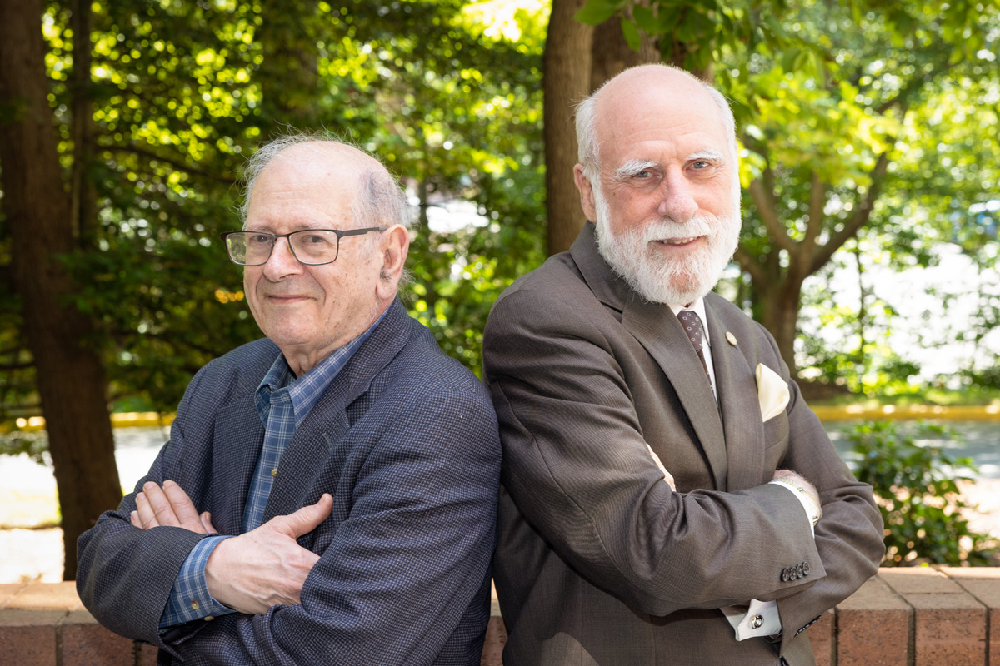
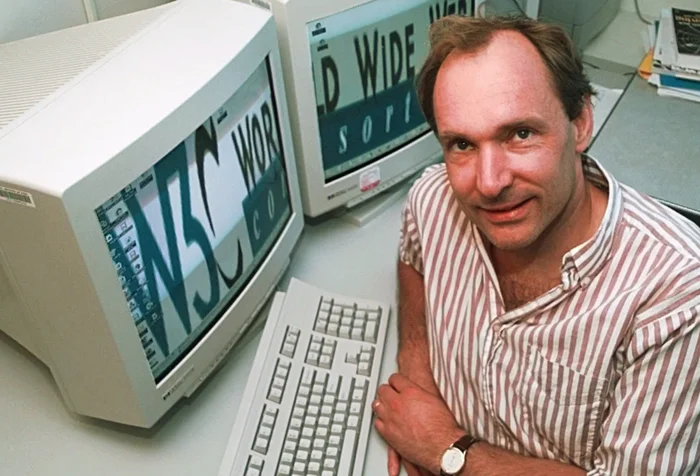
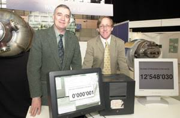
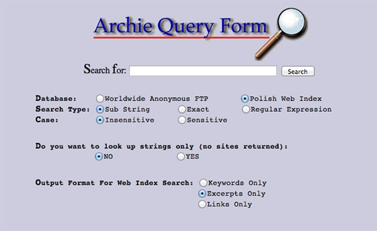
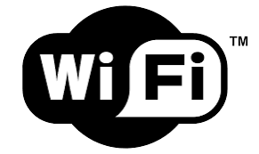
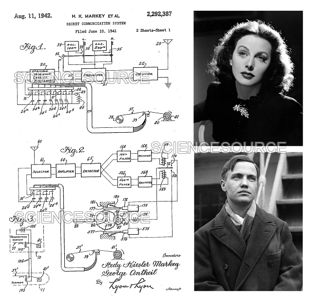

WEB HISTORY
Milestones
The Mundaneum
Belgian information activist Paul Otlet and Henri La Fontaine founded the Mundaneum.The Mundaneum contained 12 million documents and now can be seen as foreshadowing the internet. It was an essential milestone in history and contained all of the world's knowledge in 1910.
The Memex
In 1945 Vannevar Bush imagined the Memex.A device that could compress and store documents, record and communications. The Memex was an influential device even though hypothetical it caused the creation of other early hypertext systems and knowledge base software.
The Xanadu

In the 1960s Ted Nelson founded the first hypertext project. It was called Project Xanadu.It was supposed to be able to store and display documents with the ability to also perform edits. The idea came in 1960 but Nelson was not able to complete it until 2014.
ARPANET

Joseph Carl Rebnett Licklider was the first to think of ARPANET.He imagined a space where anyone could access information quickly on every subject possible. The internet began as an experiment by the Department of Defense in the 1960s and expanded with the help of universities and laboratories.
TCP/IP

Vinton G Cerf and Robert Kahn were in charge of designing the structure of the internet and procedures known as transmission control protocols/ internet protocol or TCP/IP.This procedure allows PCs and supercomputers to share the internet. They believed the internet should be an accessible space open for collaboration.
The First Email
n 1941 a man named Ray Tomlinson sent the first email.The email was a message to himself and sent via ARPANET which was a computer network created before the internet.
WWW

In 1998 Time Berner Lee invented the World Wide Web at CERN. It was at first meant to be used as a way for scientists to share information between one another but eventually turned into a global information system.
NSF

In 1983 the Department of Defense turned over the management of the network to the National Science Foundation (NSF). The NSF helped shape the internet to what it is today and even funded the world’s first web browser.
HTML

n 1990 Time Berners Lee and Robert Cailliau who was his colleague at CERN invented the first browser. Together they created HTMLand wrote the first web server and eventually developed HTTP.
The First Website

It was in 1991 when computer scientist Berners-Lee created the first website. August 6th of 1991 can be marked as the beginning of the Internet as a publicly available site.
The First Search Engine

The firstsearch engine was created by Alan Emtage in 1990 at McGill University.The name comes from the word archive without the v.
The First Photo
In 1992 thefirst photographwas uploaded by Tim Berners-Lee. The photograph was of ‘Les Horribles Cernettes”, a parody music group. The ability to browse pictures allowed images to be more accessible.
The WIFI

In 1997 Wi-fi came onto the market. EEE 802.11 was published soon after which allowed wireless data transmissions. This has led to much faster data and longer ranges, with more reliable and secure connections.
Frequency
